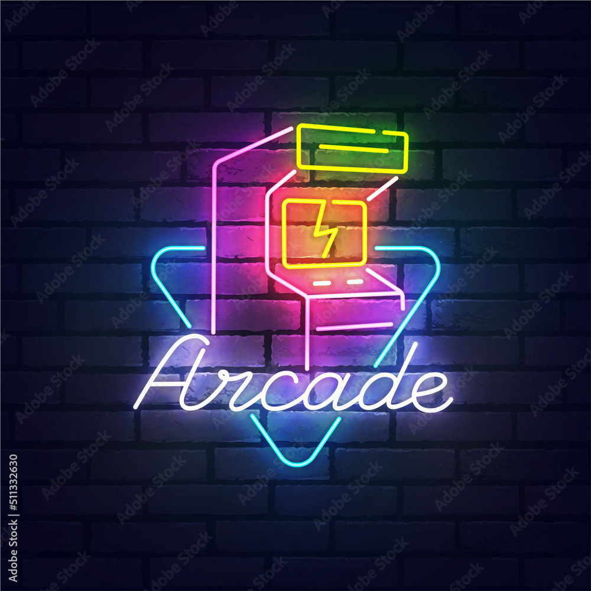
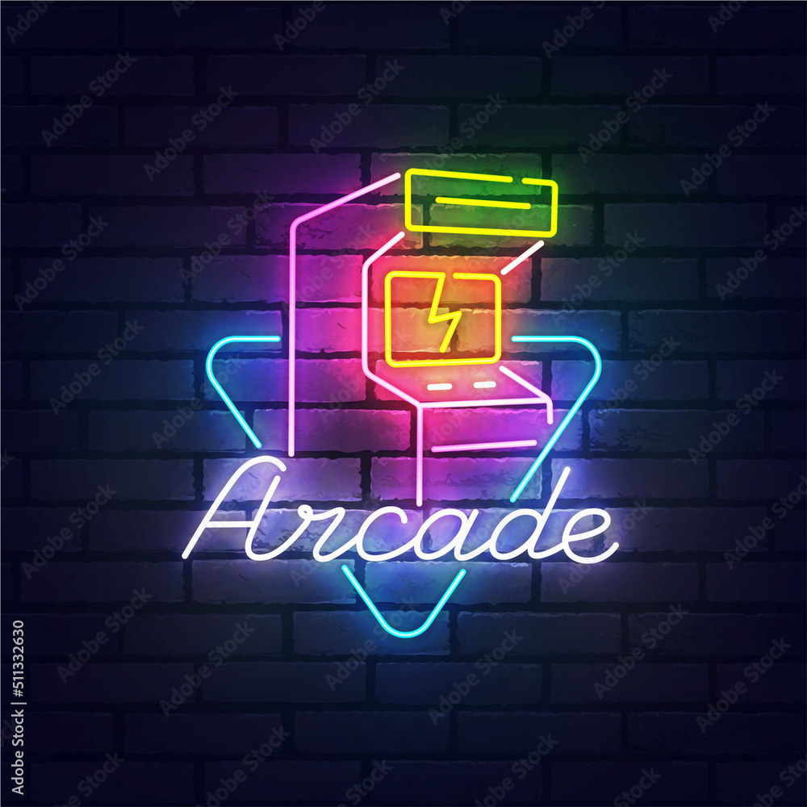

Erick René Martínez Segundo
Ingeniero en Desarrollo de Software
Ingeniero en Desarrollo de Software
 

Soy una persona autodidacta, curiosa, aferrada en conseguir los objetivos establecidos, me gusta trabajar y convivir en equipo.
Tengo una sólida trayectoria en la gestión de proyectos tecnológicos con distintas tecnologías como bases de datos, lenguajes de programación, servidores, entre otros y en el liderazgo de equipos con varios integrantes.
Especializado en la optimización de sistemas de nómina y procesos administrativos a través de soluciones innovadoras.
Poseo experiencia en el desarrollo de aplicaciones web y de escritorio, integrando tecnologías como C#, PHP, JavaScript, Jquery, Phyton, SQL Server, Microsoft PowerApps, VBA, Bootstrap, Materialize y Meta4, por mencionar algunos, para incrementar la eficiencia operativa.
Me apasiona la automatización, el análisis de datos y la implementación de herramientas que mejoren la productividad organizacional.
A pesar de no trabajar al 100% en el área de desarrollo de software o tecnologías de la información y comunicaciones, me apasiona mucho el tema,
desde pequeño tuve gran interés con las "maquinitas" que colocaban en la mayoría de las tiendas, me gustan lo videojuegos, pero más me apasionaba el estar presente cuando hacían la instalación de un nuevo videojuego,
en ese momento me di cuenta que mi pasion era la computación, ver como en la pantalla solo había un fondo negro y letras blancas y que con un "enter", comenzaba la instalación y configuración,
y es por ello que en el ambiente que me encuentre, aprovecho para aportar mis conocimientos y así agilizar procesos.
En la secundaria tuve mi primera computadora y fue dónde comencé a profundizar sobre el tema de la computación, la desarmaba, la volvía a armar, le instalaba hardware y software para tener siempre lo más reciente, por mi cuenta comencé a estudiar programación y así conocí la magia del desarrollo de software.